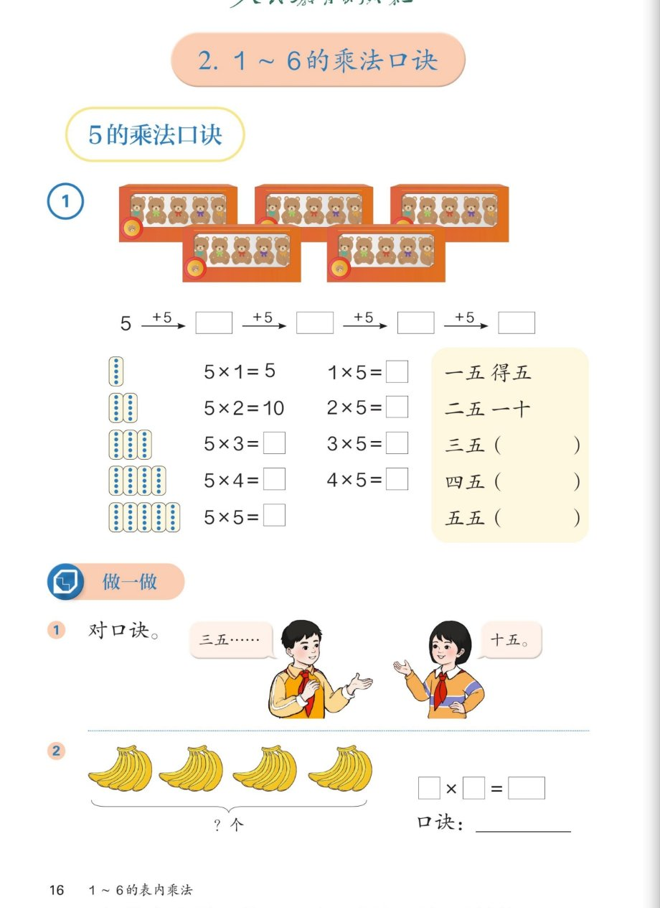

🧸 1~6的表内乘法 · 课本第 16 页 · 5 的乘法口诀
人教版《数学》二年级上册 · 有声图文带读 · 先想后看解析
题数
6
认知
2
强化
3
拓展
1
本页重点
5 的乘法口诀
🎧 分两步学：
① 解析教材图片
——纯声音读图，读到哪一块哪一块闪动提示；关键处先倒计时让你思考，再在图片下方给出解析并朗读。
② 分层提问练习
——六道分层题（认知 / 强化 / 拓展），先思考再展开解析、朗读参考答案；这一步不再回到图片。
也可以随时点任意一句话、图上任意一块单独听；点课本文字卡还会展开答案。
教材图片（点块听读，读到哪块哪块闪）

📖 人教版《数学》二年级上册 · 课本第 16 页 · 图片仅供个人学习，版权归人民教育出版社所有
🤔 想一想（点我可跳过）
课本的文字（点句子：听读 + 看答案）
例 1
数链填空：5 →+5→ □ →+5→ □ →+5→ □ →+5→ □
看答案 ▾
依次加 5：
5 →
10
→
15
→
20
→
25
。
这条数链正好是 5 的乘法口诀的得数：5、10、15、20、25。
例 1
5 的乘法口诀全表（算式 + 口诀）
看答案 ▾
一五得五：
5×1=5，1×5=5
二五一十：
5×2=10，2×5=10
三五十五：
5×3=15，3×5=15
四五二十：
5×4=20，4×5=20
五五二十五：
5×5=25（只有一个算式）
例 1
补全口诀：三五（ ）四五（ ）五五（ ）
看答案 ▾
三五（十五）
：5+5+5=15
四五（二十）
：5+5+5+5=20
五五（二十五）
：5 个 5 相加 = 25
小规律
相邻口诀得数相差 5；个位不是 5 就是 0
看答案 ▾
为什么差 5？
每多一盒就多 5 只小熊，所以 10 比 5 多 5、15 比 10 多 5……
个位规律：
5、10、15、20、25 —— 个位不是 5 就是 0。忘了口诀时，用这个规律能帮忙检查！
做一做 1
对口诀：三五……（ ）
看答案 ▾
接：
十五！
对口诀玩法：一人说「三五……」，另一人马上接「十五」。还可以试：四五——？二五——？
做一做 2
4 把香蕉，每把 5 根：□×□=□，口诀：____
看答案 ▾
列式：
5×4=20 或 4×5=20（4 个 5 相加）
口诀：
四五二十
💡 思维种子
口诀里「得」字什么时候用？
看答案 ▾
规律：
得数
不满十
→ 用「得」，如一五
得
五；得数
满十
→ 直接读数，如二五一十、三五十五。
自己检查一遍 5 的口诀，是不是都符合？
分层提问练习（先想后看解析）
🔢
认知
5×3 和 3×5 各等于多少？用的是哪句口诀？
看解析
🤔 想一想
解析：
5×3=15，3×5=15
，口诀：
三五十五
加法验证：
5+5+5=15（3 个 5 相加）
🍌
认知
4 把香蕉、每把 5 根，怎样列式？口诀是什么？
看解析
🤔 想一想
解析：
列式：
5×4=20 或 4×5=20（4 个 5 相加）
口诀：
四五二十
🧩
强化
补全口诀「五五（ ）」并写出算式。
看解析
🤔 想一想
解析：
口诀：
五五二十五
算式：
5×5=25
为什么只有一个算式？
两个乘数都是 5，交换后还是 5×5
💡 几几相同的口诀只对应一个算式
🔍
强化
5 的口诀相邻两句的得数有什么规律？有什么用？
看解析
🤔 想一想
解析：
规律：
得数依次是 5、10、15、20、25，
相邻差 5
用处：
忘了「三五」？用二五一十
加 5
得 15；忘了「二五」？用三五十五
减 5
得 10
💡 口诀忘了不要慌，邻居加 5 减 5 帮忙
⚖️
强化
1×5 和 5×1 为什么都得 5？为什么口诀只有一句？
看解析
🤔 想一想
解析：
1×5：
1 个 5 是 5；
5×1：
5 个 1 是 5
得数相同：
交换两个乘数，得数不变
口诀共用：
一五得五
💡 一对算式共用一句口诀，口诀更省记忆
🚀
拓展
把 5 的口诀背给家人听，再说说你的发现。
看解析
🤔 想一想
解析（开放题）：
可以这样讲：
一五得五、二五一十……五五二十五。我发现得数的个位
不是 5 就是 0
，因为每次都加 5；相邻两句还
相差 5
。
可以继续想：
6 个 5 是多少？五五二十五，再加一个 5 是
30
，个位还是 0！
🌈 背熟口诀 + 讲出一条规律就算完成任务
① 解析教材图片
② 分层提问练习
⏹ 停止
纯声音 + 高亮跟随 · 想好才出解析
← 返回导航